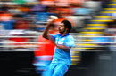

| Series | Countries | Live Scores | Fixtures | Results | News |
Features
|
Photos | Video & Audio | Blogs | Statistics | Archive | Fantasy | Mobile | |||||||||||||||||||||
Scorecard |
Commentary |
Wickets |
Partnership table |
Player v player table |
Over comparison |
Career averages |
Report |
Article index (12) |
Photo index (34) |
Wagon wheel |
Manhattan |
Worm |
Run rate graph |
Player v player graph |
Partnership graph |
Scoring shots graph |
Wickets pie |
Extras pie
- ODI no. 3462 | 2013/14 season
- Played at Eden Park, Auckland
- 25 January 2014 - day/night (50-over match)
| New Zealand innings (50 overs maximum) | R | M | B | 4s | 6s | SR | ||
| MJ Guptill | c Rahane b Jadeja | 111 | 141 | 129 | 12 | 2 | 86.04 | |
| JD Ryder | b Kumar | 20 | 18 | 12 | 4 | 0 | 166.66 | |
| KS Williamson | b Mohammed Shami | 65 | 98 | 74 | 4 | 1 | 87.83 | |
| CJ Anderson | b Ashwin | 8 | 6 | 5 | 0 | 1 | 160.00 | |
| LRPL Taylor | run out (Rahane) | 17 | 43 | 18 | 2 | 0 | 94.44 | |
| BB McCullum* | c Ashwin b Aaron | 0 | 8 | 3 | 0 | 0 | 0.00 | |
| L Ronchi | c Rahane b Jadeja | 38 | 24 | 20 | 3 | 3 | 190.00 | |
| NL McCullum | run out (Jadeja/Dhawan) | 1 | 5 | 3 | 0 | 0 | 33.33 | |
| TG Southee | run out (Dhoni/Kohli) | 27 | 28 | 23 | 1 | 3 | 117.39 | |
| MJ McClenaghan | c Jadeja b Mohammed Shami | 3 | 15 | 6 | 0 | 0 | 50.00 | |
| HK Bennett | not out | 3 | 11 | 7 | 0 | 0 | 42.85 | |
| Extras | (lb 10, w 11) | 21 | ||||||
| Total | (all out; 50 overs; 203 mins) | 314 | (6.28 runs per over) | |||||
| Bowling | O | M | R | W | Econ | |||
| B Kumar | 9 | 0 | 48 | 1 | 5.33 | (1w) | ||
| Mohammed Shami | 10 | 0 | 84 | 2 | 8.40 | (2w) | ||
| VR Aaron | 7 | 0 | 52 | 1 | 7.42 | (3w) | ||
| RA Jadeja | 10 | 0 | 47 | 2 | 4.70 | (1w) | ||
| R Ashwin | 10 | 0 | 47 | 1 | 4.70 | |||
| SK Raina | 4 | 0 | 26 | 0 | 6.50 |
| India innings (target: 315 runs from 50 overs) | R | M | B | 4s | 6s | SR | ||
| RG Sharma | c Bennett b Anderson | 39 | 65 | 38 | 1 | 4 | 102.63 | |
| S Dhawan | c Guptill b Anderson | 28 | 46 | 25 | 4 | 1 | 112.00 | |
| V Kohli | c Ronchi b Bennett | 6 | 27 | 20 | 1 | 0 | 30.00 | |
| AM Rahane | c Ronchi b Anderson | 3 | 22 | 14 | 0 | 0 | 21.42 | |
| SK Raina | c Ronchi b Southee | 31 | 59 | 39 | 3 | 0 | 79.48 | |
| MS Dhoni* | c Southee b Anderson | 50 | 79 | 60 | 2 | 3 | 83.33 | |
| R Ashwin | c Guptill b NL McCullum | 65 | 78 | 46 | 8 | 1 | 141.30 | |
| RA Jadeja | not out | 66 | 77 | 45 | 5 | 4 | 146.66 | |
| B Kumar | c NL McCullum b Bennett | 4 | 5 | 3 | 1 | 0 | 133.33 | |
| Mohammed Shami | c Williamson b Anderson | 2 | 11 | 7 | 0 | 0 | 28.57 | |
| VR Aaron | not out | 2 | 14 | 3 | 0 | 0 | 66.66 | |
| Extras | (b 1, lb 3, w 14) | 18 | ||||||
| Total | (9 wickets; 50 overs; 246 mins) | 314 | (6.28 runs per over) | |||||
| Bowling | O | M | R | W | Econ | |||
| TG Southee | 10 | 0 | 74 | 1 | 7.40 | (4w) | ||
| MJ McClenaghan | 10 | 0 | 76 | 0 | 7.60 | (2w) | ||
| HK Bennett | 10 | 2 | 41 | 2 | 4.10 | (2w) | ||
| CJ Anderson | 10 | 1 | 63 | 5 | 6.30 | (6w) | ||
| KS Williamson | 2 | 0 | 17 | 0 | 8.50 | |||
| NL McCullum | 8 | 0 | 39 | 1 | 4.87 |
| Match details |
|
Toss India, who chose to field Series New Zealand led the 5-match series 2-0 |
|
Player of the match
RA Jadeja (India) |
|
Umpires
BF Bowden and RJ Tucker (Australia) TV umpire DJ Walker Match referee DC Boon (Australia) Reserve umpire GAV Baxter |
| Match notes |
|
Series Results
New Zealand v India at Hamilton
- Jan 28, 2014
New Zealand won by 7 wickets (with 11 balls remaining)
More results
New Zealand won by 7 wickets (with 11 balls remaining)
Match Coverage
Report - Jadeja, Ashwin keep series alive with tie
Features - Guptill's stunning grab
Stats Analysis - High-scoring ties, and a new high for Anderson
News - McCullum rues one that got away
Match Analysis - Bennett turns misery to delight
News - Dhoni relieved series still alive
Match Analysis - Jadeja turns a batting corner
Match Analysis - NZ's problem of the knockout punch
Match Analysis - Crowe: Jadeja should be tried at No. 4
Match Analysis - Crowe: Guptill and Williamson played key roles
Match Analysis - NZ's bowling was one-dimensional
Gallery - Jadeja, Ashwin keep series alive with tie
Photos
|
Jan 25, 2014 Corey Anderson conceded 17 in the final over Getty Images |
Jan 25, 2014 Varun Aaron went for 52 in seven overs Getty Images |
Sponsored Links
The Powerful and Stylish Renault Duster
Big, Beautiful and Efficient
Sophistication meets performance.
Check out the brand new cricket ratings
Powered by Idea